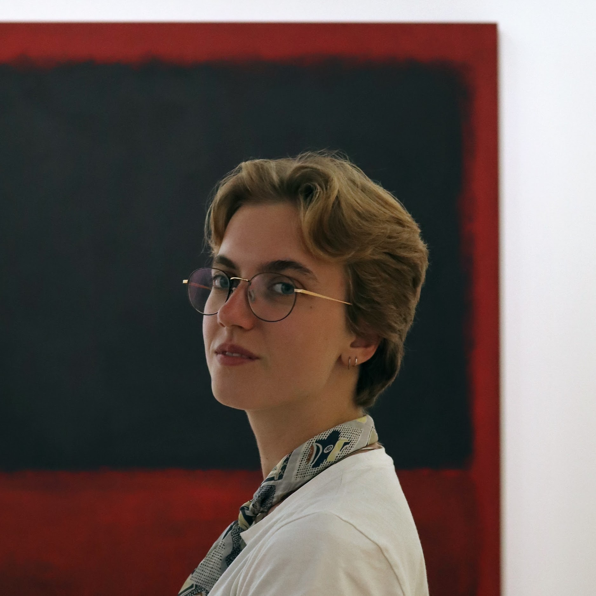

PhD candidate in philosophy, researching hate speech and misogyny.
Queen's University Belfast.
asanders02 [at] qub [dot] ac [dot] uk

My PhD research is about hate speech and misogyny. My research interest are social epistemology, applied ethics, conceptual engineering, and feminist philosophy. I occasionally dabble in Wittgenstein and phenomenology.
Before starting my PhD at Queen's, I obtained a MSc in Logic and a rMA in Philosophy from the University of Amsterdam. My theses were about the social epistemology of predatory grooming and about patient preference prediction, autonomy, and care for incapacited patients. I have a BA in Philosophy and LLB in Law, also from the University of Amsterdam.
A New Epistemic Account of Grooming: Norms, Expectations, and Trust
October 2026, Rationality and Normativity Conference, Hradec Králové, Czechia.
A New Epistemic Account of Grooming: Norms, Expectations, and Trust
September 2026, SOPhiA, Salzburg, Austria.